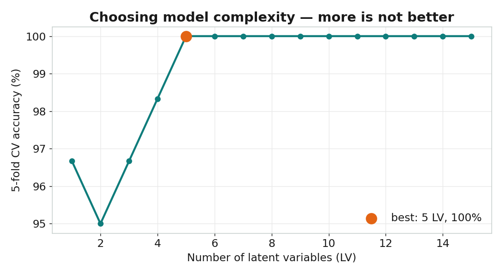
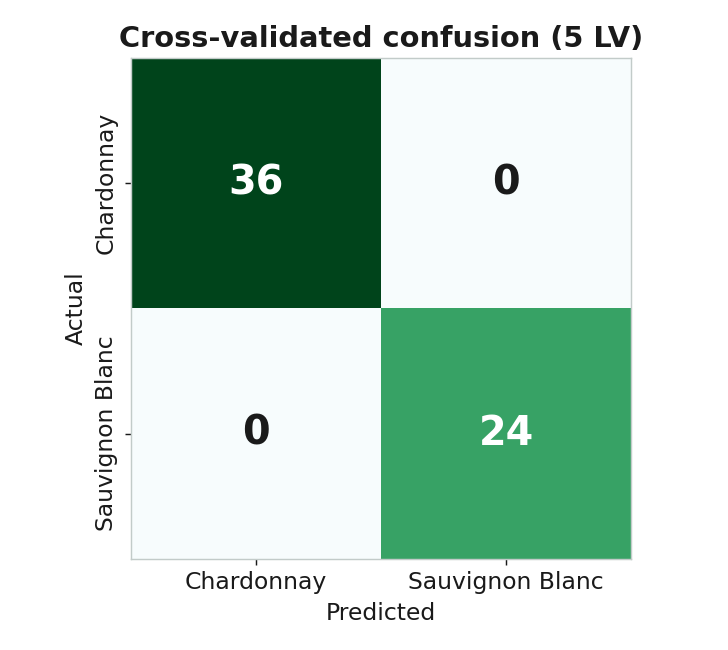

PLS-
DA
教學影片 · 質譜食品分析（二）· 約 4.8 分鐘 · 點擊開始
01
/ 13
PLS-
DA
用質譜指紋鑑別葡萄品種
質譜食品分析 · 第二部
02
/ 13 — 轉折
從「探索」到「鑑別」
PCA · 非監督
只看指紋、不看答案。
它「發現」了品種，卻不是為品種而分。
PLS-DA · 監督
把品種標籤交給它，
要它找出最能分開類別的方向。
03
/ 13 — 對比
PCA vs PLS-DA：兩種方向
PCA：追最大分散
PLS-DA：對齊分界
PLS-DA 把軸「轉」去對齊兩類之間的分界，換來更乾淨的分類
04
/ 13 — 機制
PLS-DA 的想法
max cov( X
w
,
y
)
指紋投影 ⟷ 類別
把品種變成數字標籤
y
，找權重
w
讓指紋投影與類別的共變異最大
這些新方向叫
潛在變量 LV
——和 PCA 一樣壓縮，但目標是「分類」
05
/ 13 — 核心
監督式分數：LV1 分開兩品種
06
/ 13 — 驗證
誠實驗證：交叉驗證
第 1 折
測試
訓練
訓練
訓練
訓練
第 2 折
訓練
測試
訓練
訓練
訓練
第 3 折
訓練
訓練
測試
訓練
訓練
第 4 折
訓練
訓練
訓練
測試
訓練
第 5 折
訓練
訓練
訓練
訓練
測試
每次留一份測試、其餘訓練，輪流五次——訓練與測試分開才誠實
07
/ 13 — 選 LV
要用幾個潛在變量？

08
/ 13 — 成績
混淆矩陣：誰認錯了？

09
/ 13 — 化學
哪些代謝物在分類？
VIP
衡量每種代謝物對分類的貢獻。
榜首是
酒石酸、脯胺酸、肌醇
——酒最主要的有機酸與胺基酸。全是真實酒化學。
10
/ 13 — 應用
這套方法能做什麼
產地溯源
橄欖油、咖啡來自哪裡
品種鑑別
像這支影片的葡萄品種
摻偽偵測
果汁、蜂蜜有沒有摻假
11
/ 13 — 收束
PCA ↔ PLS-DA 地圖
質譜指紋
前處理（共用）
PCA（非監督）
PLS-DA（監督）
探索・找異常
分類・鑑別
先用 PCA 探索，再用 PLS-DA 鑑別——食品質譜分析的完整地圖
12
/ 13 — 金句
PLS-DA
讓質譜指紋
說出「這是什麼」
13
/ 13 — 完
接下來：
用 Orange 親手做
不寫程式，拉一遍 PCA 與 PLS-DA
質譜食品分析 · PLS-DA · 完
PLS-DA：讓模型學會鑑別品種